从fofa中搜索RDP，会看到它会解析出RDP的信息。
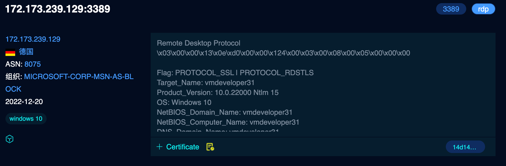
本文探索如何自己实现一个。
Nmap指纹
在https://raw.githubusercontent.com/nmap/nmap/master/nmap-service-probes 可以找到关于RDP发包的定义
##############################NEXT PROBE##############################
# This is an RDP connection request with the MSTS cookie set. Some RDP
# listeners (with NLA?) only respond to this one.
# This must be sent before TLSSessionReq because Windows RDP will handshake TLS
# immediately and we don't have a way of identifying RDP at that point.
Probe TCP TerminalServerCookie q|\x03\0\0*%\xe0\0\0\0\0\0Cookie: mstshash=nmap\r\n\x01\0\x08\0\x03\0\0\0|
rarity 7
ports 3388,3389
fallback TerminalServer
Probe TCP TerminalServer q|\x03\0\0\x0b\x06\xe0\0\0\0\0\0|
rarity 6
ports 515,1028,1068,1503,1720,1935,2040,3388,3389
# Windows 2000 Server
# Windows 2000 Advanced Server
# Windows XP Professional
match ms-wbt-server m|^\x03\0\0\x0b\x06\xd0\0\0\x12.\0$|s p/Microsoft Terminal Service/ o/Windows/ cpe:/o:microsoft:windows/a
match ms-wbt-server m|^\x03\0\0\x17\x08\x02\0\0Z~\0\x0b\x05\x05@\x06\0\x08\x91J\0\x02X$| p/Microsoft Terminal Service/ i/Used with Netmeeting, Remote Desktop, Remote Assistance/ o/Windows/ cpe:/o:microsoft:windows/a
match ms-wbt-server m|^\x03\0\0\x11\x08\x02..}\x08\x03\0\0\xdf\x14\x01\x01$|s p/Microsoft NetMeeting Remote Desktop Service/ o/Windows/ cpe:/a:microsoft:netmeeting/ cpe:/o:microsoft:windows/a
match ms-wbt-server m|^\x03\0\0\x0b\x06\xd0\0\0\x03.\0$|s p/Microsoft NetMeeting Remote Desktop Service/ o/Windows/ cpe:/a:microsoft:netmeeting/ cpe:/o:microsoft:windows/a
# Need more samples!
match ms-wbt-server m|^\x03\0\0\x0b\x06\xd0\0\0\0\0\0| p/xrdp/ cpe:/a:jay_sorg:xrdp/
match ms-wbt-server m|^\x03\0\0\x0e\t\xd0\0\0\0[\x02\xa1]\0\xc0\x01\n$| p/IBM Sametime Meeting Services/ o/Windows/ cpe:/a:ibm:sametime/ cpe:/o:microsoft:windows/a
match ms-wbt-server m|^\x03\0\0\x0b\x06\xd0\0\x004\x12\0| p/VirtualBox VM Remote Desktop Service/ o/Windows/ cpe:/a:oracle:vm_virtualbox/ cpe:/o:microsoft:windows/a
match ms-wbt-server-proxy m|^nmproxy: Procotol byte is not 8\n$| p/nmproxy NetMeeting proxy/
它在tcp连接上之后会发包 \x03\0\0*%\xe0\0\0\0\0\0Cookie: mstshash=nmap\r\n\x01\0\x08\0\x03\0\0\0，nmap关于rdp的版本指纹比较少，而且发的包还有特征。
nmap有一个rdp.lua，封装了rdp连接的前几层协议，后面深入学习协议时可以对照着看。
深入协议
官方文档：https://learn.microsoft.com/en-us/openspecs/windows_protocols/ms-rdpbcgr/023f1e69-cfe8-4ee6-9ee0-7e759fb4e4ee 有协议的交互流程图
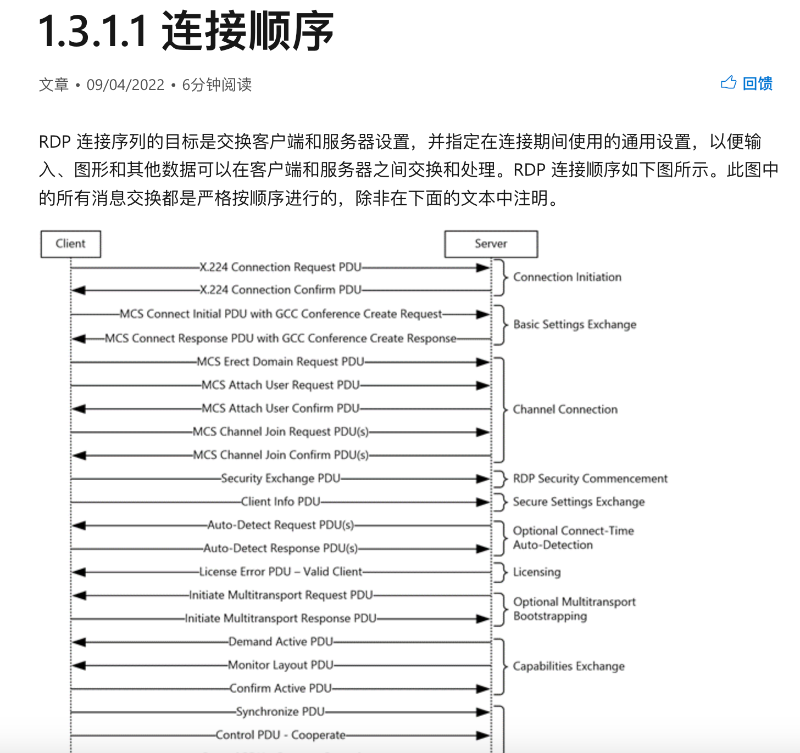
发包
看了文档后，发现连接顺序分为十个不同的阶段，但是获得一些基础信息，只用看第一阶段Connection Initiation就行了。
Connection Initiation：客户端通过向服务器发送 X.224 连接请求 PDU（第2.2.1.1节）来启动连接。服务器响应 0 类 X.224 连接确认 PDU（第2.2.1.2节）。
从这一点开始，客户端和服务器之间发送的所有后续数据都包装在 X.224 数据协议数据单元 (PDU) (1) 中。
请求结构
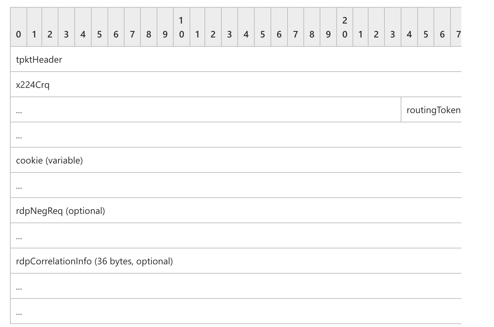
结构体如下：
tpktHeader（4 字节）： TPKT 标头，如[T123]第 8 节中所指定。
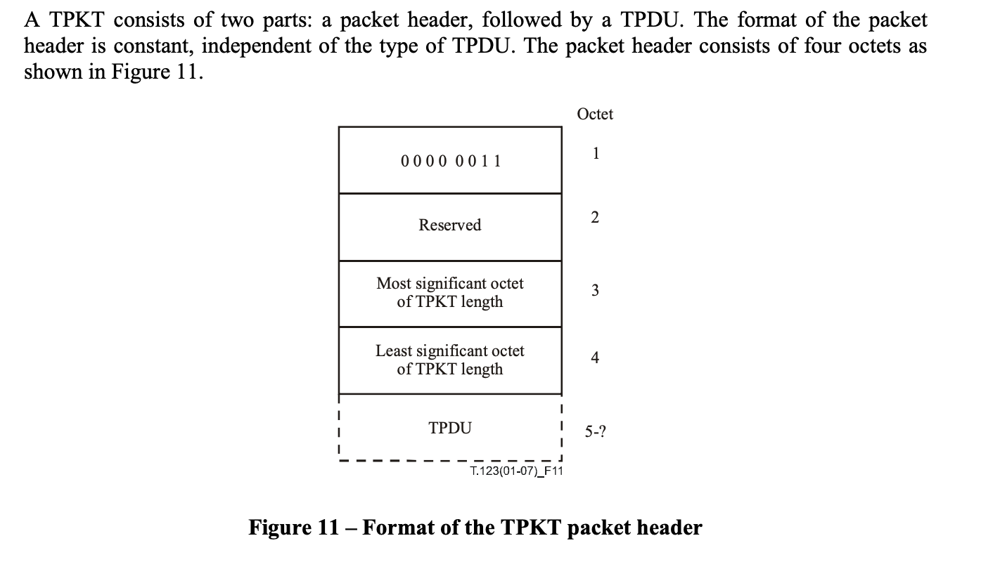
nmap中的定义
__tostring = function(self)
return string.pack(">BBI2",
self.version, // 一般是3
self.reserved or 0, // 一般是0
(self.data and #self.data + 4 or 4)) // 整个结构体的大小，包括后面的数据
..self.data // 后面的数据
x224Crq（7 字节）： 一个 X.224 类 0 连接请求传输协议数据单元 (TPDU)，如[X224] 第 13.3 节中所指定。
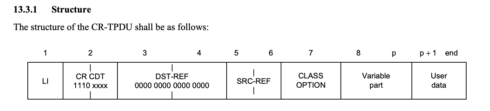
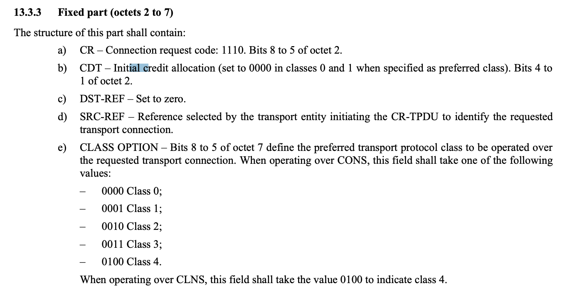
- 第一个是后面结构体长度，第二个是hex(int(‘11100000’,2)),即0xe0 ,后面5个字节都是0，这个数据结构即length+0xe0,0x0,0x0,0x0,0x0,0x0
routingToken（可变）：一个可选的可变长度路由令牌（用于负载平衡），由 0x0D0A 两字节序列终止。有关路由令牌格式的详细信息，请参阅[MSFT-SDLBTS] “路由令牌格式”。路由令牌和 CR+LF 序列的长度包含在X.224 连接请求长度指示符 字段中。如果此字段存在，则 cookie字段不得存在。
cookie（变量）：可选且长度可变的ANSI 字符串，以 0x0D0A 两字节序列结尾。此文本字符串必须是“Cookie：mstshash=IDENTIFIER”，其中 IDENTIFIER 是一个 ANSI 字符串（示例 cookie 字符串显示在第4.1.1节中）。整个 cookie 字符串和 CR+LF 序列的长度包含在 X.224 连接请求长度指示符字段中。如果routingToken 字段存在，则该字段不得存在。
rdpNegReq（8 字节）：一个可选的 RDP 协商请求（第2.2.1.1.1节）结构。该字段的长度包含在X.224 连接请求长度指示符 字段中。
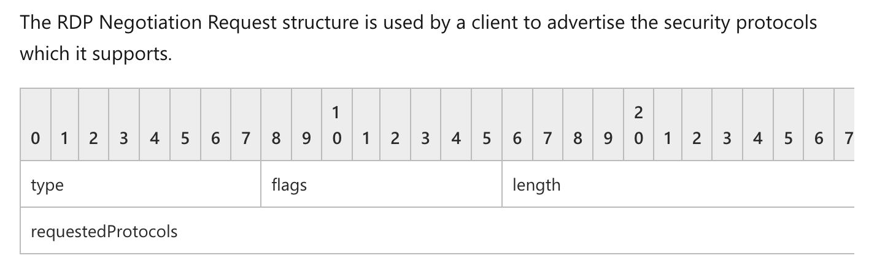
- 文档描述很详细了，这个结构体很重要，用于设置请求协议
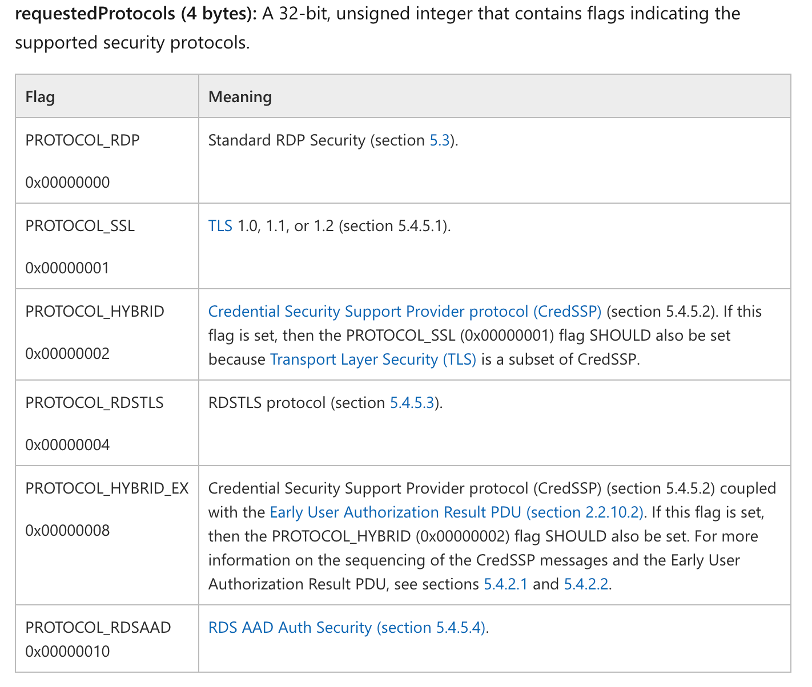
rdpCorrelationInfo（36 字节）：一个可选的 关联信息（第2.2.1.1.2节）结构。该字段的长度包含在X.224 连接请求长度指示符 字段中。如果在RDP 协商请求结构的标志 字段中设置了 CORRELATION_INFO_PRESENT (0x08) 标志，则该字段必须存在，封装在可选的rdpNegReq 字段中。如果未设置 CORRELATION_INFO_PRESENT (0x08) 标志，则该字段不得存在。
- 这个结构体没啥用，不用写
用golang实现这个结构体
type RdpReq struct {
requestedProtocols uint32
cookie []byte
}
func NewReq(protocol uint32, cookie []byte) *RdpReq {
return &RdpReq{requestedProtocols: protocol, cookie: cookie}
}
func (r *RdpReq) Serialize() []byte {
buff := &bytes.Buffer{}
// cookie
if r.cookie != nil {
cookie := []byte(fmt.Sprintf("Cookie: mstshash=%s\r\n", r.cookie))
buff.Write(cookie)
}
// rdpNegReq
buff.Write([]byte{0x1, 0x0, 0x8, 0x0})
requestedProtocolData := make([]byte, 4)
binary.LittleEndian.PutUint32(requestedProtocolData, r.requestedProtocols)
buff.Write(requestedProtocolData)
buff2 := &bytes.Buffer{}
// x224Crq (7 字节)
buff2.Write([]byte{
uint8(buff.Len() + 6),
0xe0,
0x00, 0x00,
0x00, 0x00, 0x00,
})
buff2.Write(buff.Bytes())
// tpktHeader（4 字节）
buff3 := &bytes.Buffer{}
buff3.Write([]byte{3, 0})
lengthData := make([]byte, 2)
binary.BigEndian.PutUint16(lengthData, uint16(buff2.Len()+4))
buff3.Write(lengthData)
buff3.Write(buff2.Bytes())
return buff3.Bytes()
}
测试
func main() {
rdp := NewReq(PROTOCOL_RDP|PROTOCOL_SSL|PROTOCOL_HYBRID, []byte("w8ay"))
buff := rdp.Serialize()
fmt.Println(hex.Dump(buff))
}
输出
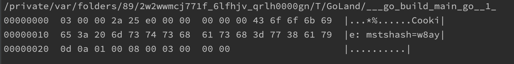
和nmap的probe\x03\0\0*%\xe0\0\0\0\0\0Cookie: mstshash=nmap\r\n\x01\0\x08\0\x03\0\0\0也能对应上
收包
在发包完毕后，会收到如下结构体
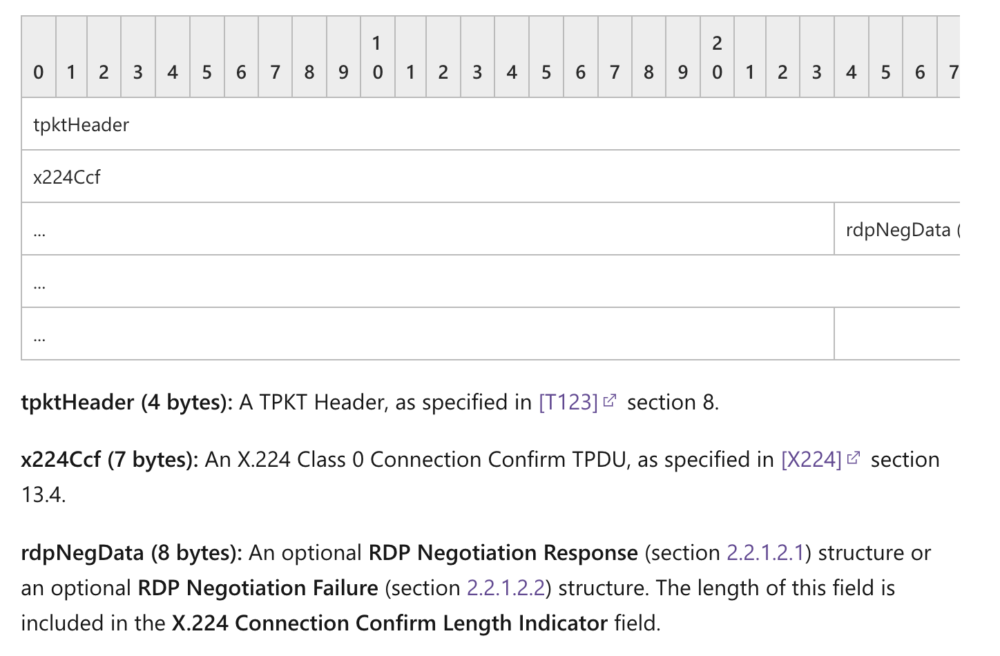
前面的结构可以跳过，直接看rdpNegData结构
文档： https://learn.microsoft.com/en-us/openspecs/windows_protocols/ms-rdpbcgr/b2975bdc-6d56-49ee-9c57-f2ff3a0b6817
成功的话，它会返回一个服务器指定的通信协议。
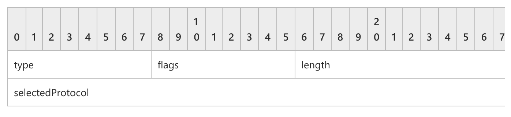
根据结构用golang写个解析程序
type RdpResp struct {
data []byte
Type int
Flags int
Result uint32
}
func ParseRdpResp(data []byte) (*RdpResp, error) {
GenericRDPSignature := []byte{
0x03, 0x00, 0x00, 0x13, 0x0e, 0xd0, 0x00, 0x00, 0x12, 0x34, 0x00,
}
if !checkSignature(data[:11], GenericRDPSignature) {
return nil, errors.New("not rdp response")
}
reader := bytes.NewReader(data)
reader.Seek(11, io.SeekStart)
r := new(RdpResp)
r.data = data
_type, err := reader.ReadByte()
if err != nil {
return r, err
}
r.Type = int(_type)
_flag, err := reader.ReadByte()
if err != nil {
return r, err
}
r.Flags = int(_flag)
reader.Seek(2, io.SeekCurrent)
result := make([]byte, 4)
_, err = reader.Read(result)
if err != nil {
return r, err
}
r.Result = binary.LittleEndian.Uint32(result)
return r, nil
}
简单OS识别
第一层连接协议中，我们可以控制请求的协议，并从返回包中解析出服务器选择的协议以及flags参数。
协议的支持在windows不同版本是不一样的，根据这个，将协议设定为PROTOCOL_RDP|PROTOCOL_SSL|PROTOCOL_HYBRID_EX，即可根据返回包结果来识别不同OS。
func (r *RdpResp) FingerPrintOs() string {
Windows2000 := []byte{
0x03, 0x00, 0x00, 0x0b, 0x06, 0xd0, 0x00, 0x00, 0x12, 0x34, 0x00,
}
WindowsServer2012R2 := []byte{
0x03, 0x00, 0x00, 0x13, 0x0e, 0xd0, 0x00, 0x00, 0x12, 0x34, 0x00,
0x03, 0x00, 0x08, 0x00, 0x02, 0x00, 0x00, 0x00,
}
WindowsServer2008 := []byte{
0x03, 0x00, 0x00, 0x13, 0x0e, 0xd0, 0x00, 0x00, 0x12, 0x34, 0x00, 0x02,
0x00, 0x08, 0x00, 0x02, 0x00, 0x00, 0x00,
}
Windows7OrServer2008R2 := []byte{
0x03, 0x00, 0x00, 0x13, 0x0e, 0xd0, 0x00, 0x00, 0x12, 0x34, 0x00, 0x02,
0x09, 0x08, 0x00, 0x02, 0x00, 0x00, 0x00,
}
WindowsServer2008R2DC := []byte{
0x03, 0x00, 0x00, 0x13, 0x0e, 0xd0, 0x00, 0x00, 0x12, 0x34, 0x00, 0x02,
0x01, 0x08, 0x00, 0x02, 0x00, 0x00, 0x00,
}
Windows10 := []byte{
0x03, 0x00, 0x00, 0x13, 0x0e, 0xd0, 0x00, 0x00, 0x12, 0x34, 0x00, 0x02,
0x1f, 0x08, 0x00, 0x02, 0x00, 0x00, 0x00,
}
WindowsServer2012Or8 := []byte{
0x03, 0x00, 0x00, 0x13, 0x0e, 0xd0, 0x00, 0x00, 0x12, 0x34, 0x00, 0x02,
0x0f, 0x08, 0x00, 0x02, 0x00, 0x00, 0x00,
}
WindowsServer2016or2019 := []byte{
0x03, 0x00, 0x00, 0x13, 0x0e, 0xd0, 0x00, 0x00, 0x12, 0x34, 0x00, 0x02,
0x0f, 0x08, 0x00, 0x08, 0x00, 0x00, 0x00,
}
signatures := map[string][]byte{
"Windows 2000": Windows2000,
"WindowsServer2012R2": WindowsServer2012R2,
"Windows Server 2008": WindowsServer2008,
"Windows 7 or Server 2008 R2": Windows7OrServer2008R2,
"Windows Server 2008 R2 DC": WindowsServer2008R2DC,
"Windows 10": Windows10,
"Windows 8 or Server 2012": WindowsServer2012Or8,
"Windows Server 2016 or 2019": WindowsServer2016or2019,
}
for fingerprint, signature := range signatures {
signatureLength := len(signature)
if len(r.data) < signatureLength {
continue
}
responseSlice := r.data[:signatureLength]
tof := checkSignature(responseSlice, signature)
if tof {
return fingerprint
}
}
return ""
}
简单识别通过包对比进行识别，有时能识别fofa所识别不了的地方。如
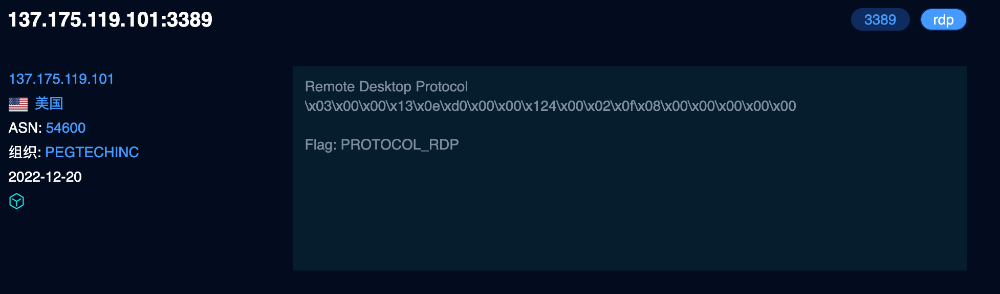
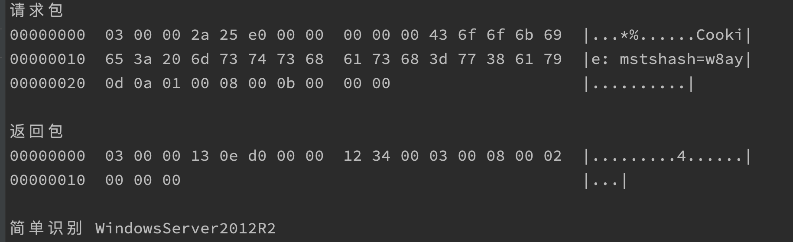
协议枚举
可以看nmap rdp加密协议枚举的脚本 https://github.com/nmap/nmap/blob/master/scripts/rdp-enum-encryption.nse
-- @output
-- PORT STATE SERVICE
-- 3389/tcp open ms-wbt-server
-- | Security layer
-- | CredSSP (NLA): SUCCESS
-- | CredSSP with Early User Auth: SUCCESS
-- | Native RDP: SUCCESS
-- | RDSTLS: SUCCESS
-- | SSL: SUCCESS
-- | RDP Encryption level: High
-- | 40-bit RC4: SUCCESS
-- | 56-bit RC4: SUCCESS
-- | 128-bit RC4: SUCCESS
-- | FIPS 140-1: SUCCESS
-- |_ RDP Protocol Version: RDP 5.x, 6.x, 7.x, or 8.x server
它实现获取Security layer，是遍历发送协议，如果返回包支持则支持。这个可以很容易实现。
在之前封装的返回包结构中加上获取支持协议的文本
func (r *RdpResp) SupportProtocol() string {
if r.Type == TYPE_RDP_NEG_FAILURE {
return ""
}
switch r.Result {
case PROTOCOL_HYBRID_EX:
return "PROTOCOL_HYBRID_EX"
case PROTOCOL_RDSAAD:
return "PROTOCOL_RDSAAD"
case PROTOCOL_HYBRID:
return "PROTOCOL_HYBRID"
case PROTOCOL_SSL:
return "PROTOCOL_SSL"
case PROTOCOL_RDP:
return "PROTOCOL_RDP"
case PROTOCOL_RDSTLS:
return "PROTOCOL_RDSTLS"
}
return ""
}
封装协议枚举函数
// 获取RDP支持的协议
func GetSupportProtocol(address string, port uint16, timeout time.Duration) []string {
ret := make([]string, 0)
for _, v := range []uint32{PROTOCOL_RDP, PROTOCOL_SSL, PROTOCOL_HYBRID, PROTOCOL_HYBRID_EX, PROTOCOL_RDSTLS, PROTOCOL_RDSAAD} {
conn, err := DialTCP(address, port, timeout)
if err != nil {
panic(err)
}
rdp := NewReq(v, []byte("w8ay"))
buff := rdp.Serialize()
err = Send(conn, buff, timeout)
if err != nil {
continue
}
response, err := Recv(conn, timeout)
if err != nil {
continue
}
resp, _ := ParseRdpResp(response)
if resp != nil {
if resp.Type == TYPE_RDP_NEG_RSP {
ret = append(ret, resp.SupportProtocol())
}
}
time.Sleep(time.Millisecond * 100)
}
return ret
}
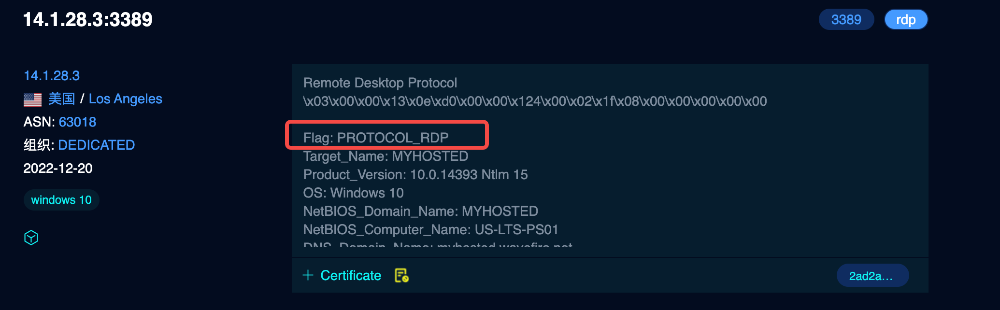
不清楚fofa的flag是怎么实现的，相同的IP使用这种方式能识别出的协议更多。
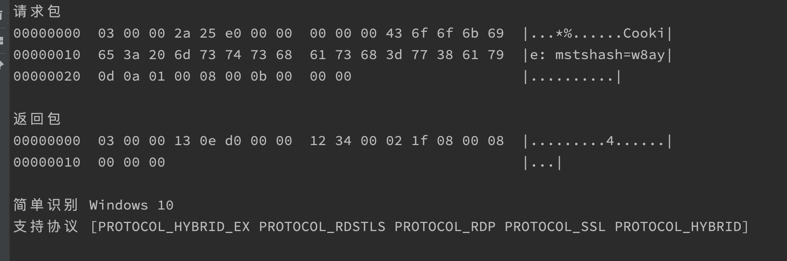
RDP Protocol Version的获取要实现MCS结构，太麻烦不做了，资料在
https://learn.microsoft.com/en-us/openspecs/windows_protocols/ms-rdpbcgr/379a020e-9925-4b4f-98f3-7d634e10b411
NTLM 信息获取
大佬说：tls连接后会进行ntlmssp的挑战响应，能够非常准确的提取出来主机名和操作系统的版本
RDP文档中写道，为了安全考虑，可以直接走TLS协议并使用CredSSP进行验证。CredSSP可以使用ntlm验证进行信息获取。
nmap有一个脚本用于提取ntlm信息 https://github.com/nmap/nmap/blob/master/scripts/rdp-ntlm-info.nse
-- @output
-- 3389/tcp open ms-wbt-server syn-ack ttl 128 Microsoft Terminal Services
-- | rdp-ntlm-info:
-- | Target_Name: W2016
-- | NetBIOS_Domain_Name: W2016
-- | NetBIOS_Computer_Name: W16GA-SRV01
-- | DNS_Domain_Name: W2016.lab
-- | DNS_Computer_Name: W16GA-SRV01.W2016.lab
-- | DNS_Tree_Name: W2016.lab
-- | Product_Version: 10.0.14393
-- |_ System_Time: 2019-06-13T10:38:35+00:00
-
文档：https://learn.microsoft.com/en-us/openspecs/windows_protocols/ms-cssp/6aac4dea-08ef-47a6-8747-22ea7f6d8685?source=recommendations
请求体，negoToken字段是ntlm的结构，整个结构体要进行ASN.1编码。
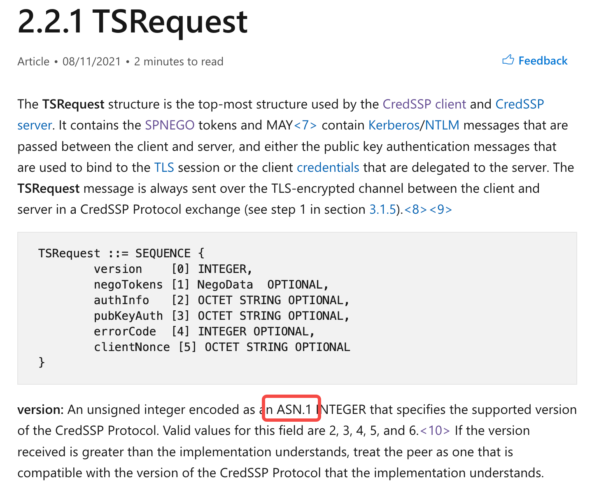
嫌麻烦可以直接用nmap组好的数据包
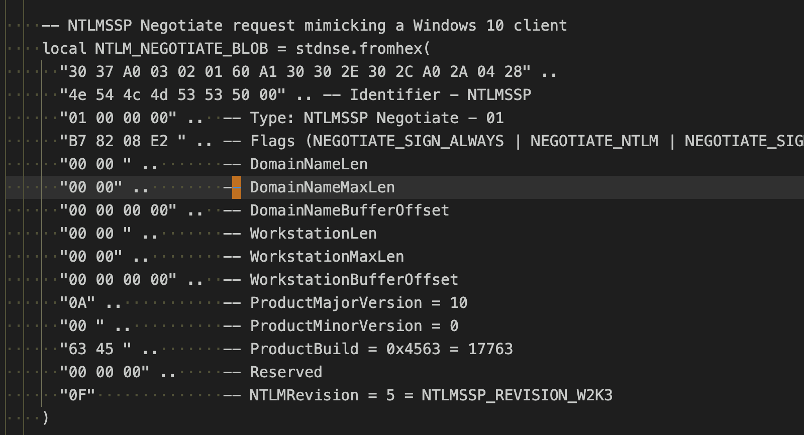
它的返回信息见文档
https://learn.microsoft.com/en-us/openspecs/windows_protocols/ms-nlmp/801a4681-8809-4be9-ab0d-61dcfe762786
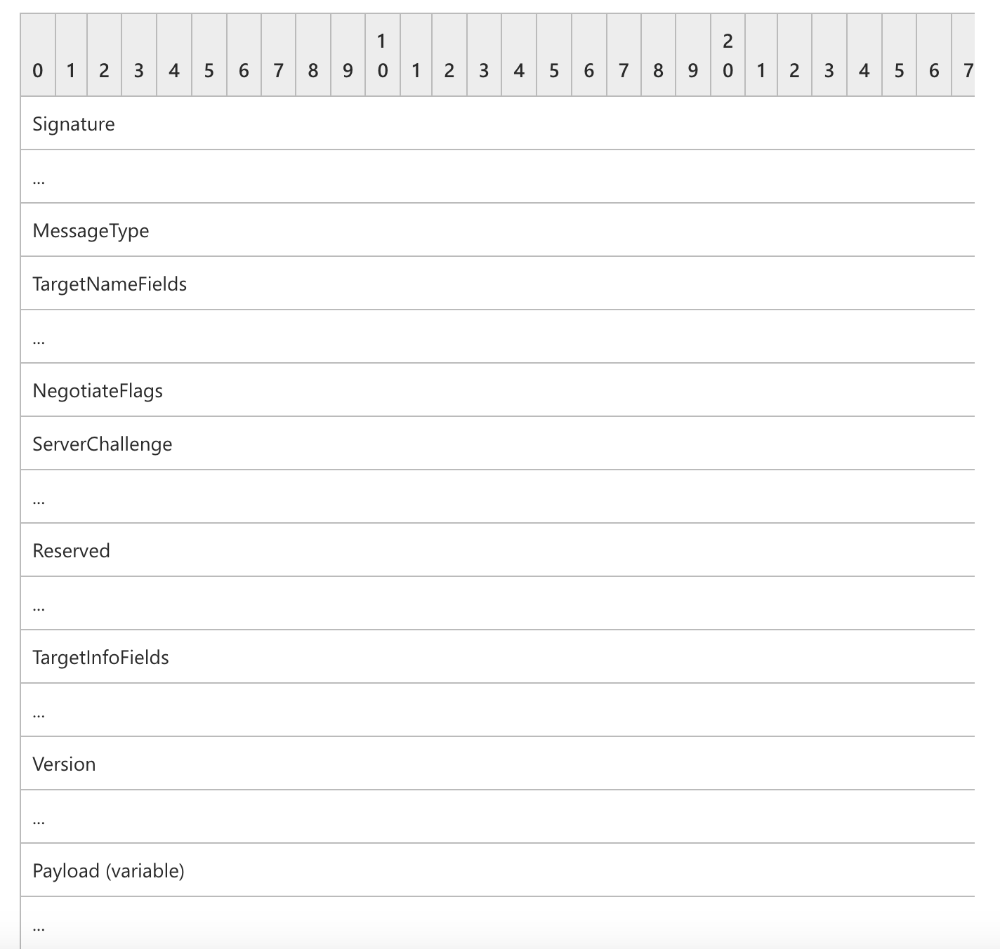
里面值得关注的数据有 OSVersion，TargetName 以及以下的结构
AvIDMap := map[uint16]string{
1: "NetBIOSComputerName",
2: "NetBIOSDomainName",
3: "FQDN", // DNS Computer Name
4: "DNSDomainName",
5: "DNSTreeName",
7: "Timestamp",
9: "MsvAvTargetName",
}
编写程序解析后就能获得想要的信息了。
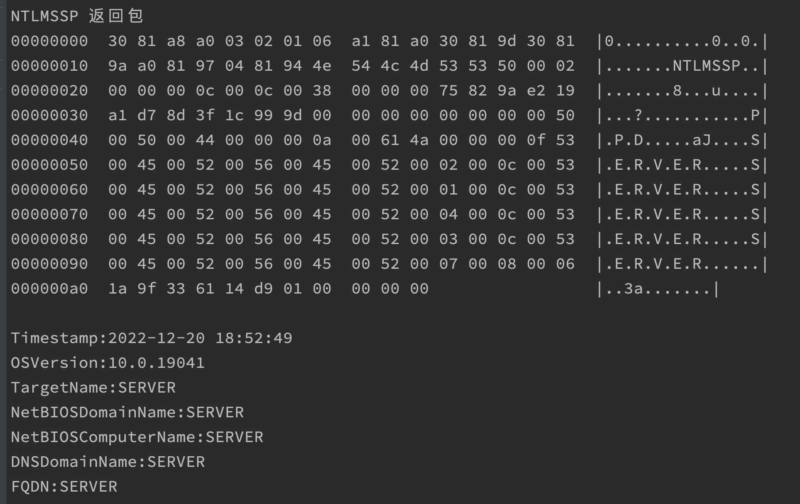
获得的操作系统版本信息是基于_Major-Minor-Build_的版本号，找到一个比较全的列表
https://www.gaijin.at/en/infos/windows-version-numbers
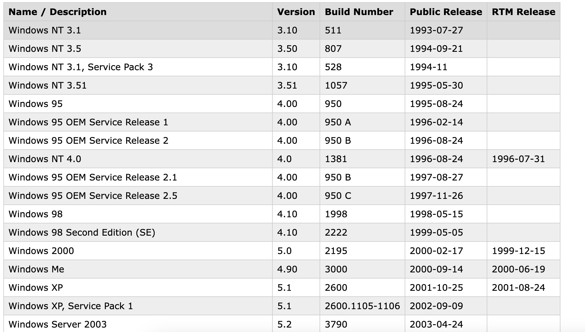
写个爬虫就给爬下来了
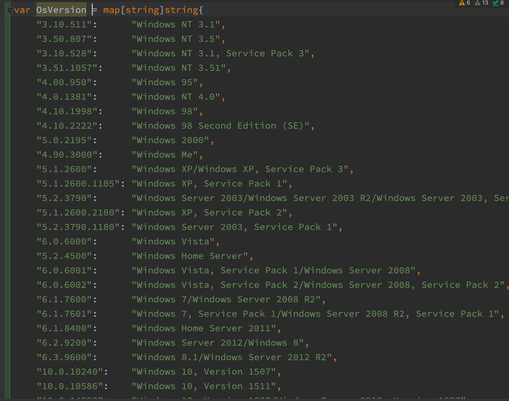
再次运行下，就能得到操作系统的详细信息了。输出
请求包
00000000 03 00 00 2a 25 e0 00 00 00 00 00 43 6f 6f 6b 69 |...*%......Cooki|
00000010 65 3a 20 6d 73 74 73 68 61 73 68 3d 77 38 61 79 |e: mstshash=w8ay|
00000020 0d 0a 01 00 08 00 0b 00 00 00 |..........|
返回包
00000000 03 00 00 13 0e d0 00 00 12 34 00 02 1f 08 00 08 |.........4......|
00000010 00 00 00 |...|
简单OS识别: Windows 10
支持协议 [PROTOCOL_RDP PROTOCOL_SSL PROTOCOL_HYBRID PROTOCOL_HYBRID_EX PROTOCOL_RDSTLS]
NTLMSSP 返回包
00000000 30 81 a8 a0 03 02 01 06 a1 81 a0 30 81 9d 30 81 |0..........0..0.|
00000010 9a a0 81 97 04 81 94 4e 54 4c 4d 53 53 50 00 02 |.......NTLMSSP..|
00000020 00 00 00 0c 00 0c 00 38 00 00 00 75 82 9a e2 5e |.......8...u...^|
00000030 53 34 ae 68 91 2c 56 00 00 00 00 00 00 00 00 50 |S4.h.,V........P|
00000040 00 50 00 44 00 00 00 0a 00 61 4a 00 00 00 0f 53 |.P.D.....aJ....S|
00000050 00 45 00 52 00 56 00 45 00 52 00 02 00 0c 00 53 |.E.R.V.E.R.....S|
00000060 00 45 00 52 00 56 00 45 00 52 00 01 00 0c 00 53 |.E.R.V.E.R.....S|
00000070 00 45 00 52 00 56 00 45 00 52 00 04 00 0c 00 53 |.E.R.V.E.R.....S|
00000080 00 45 00 52 00 56 00 45 00 52 00 03 00 0c 00 53 |.E.R.V.E.R.....S|
00000090 00 45 00 52 00 56 00 45 00 52 00 07 00 08 00 74 |.E.R.V.E.R.....t|
000000a0 df 2b ea 65 14 d9 01 00 00 00 00 |.+.e.......|
NetBIOSComputerName:SERVER
DNSDomainName:SERVER
FQDN:SERVER
Timestamp:2022-12-20 19:26:33
Product_Version:10.0.19041
Os_Verion:Windows 10, Version 2004/Windows Server, Version 2004
TargetName:SERVER
NetBIOSDomainName:SERVER
fofa中的信息
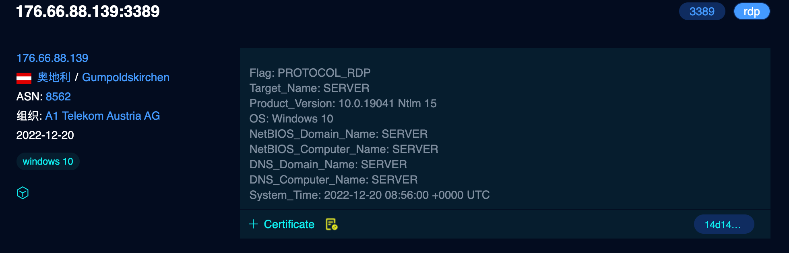
NTLM解析代码如下
func RdpWithNTLM(conn net.Conn, timeout time.Duration) (map[string]any, error) {
info := make(map[string]any)
// CredSSP protocol - NTLM authentication
// https://docs.microsoft.com/en-us/openspecs/windows_protocols/ms-cssp
// https://docs.microsoft.com/en-us/openspecs/windows_protocols/ms-nlmp
// http://davenport.sourceforge.net/ntlm.html
NegotiatePacket := []byte{
0x30, 0x37, 0xA0, 0x03, 0x02, 0x01, 0xff, 0xA1, 0x30, 0x30, 0x2E, 0x30, 0x2C, 0xA0, 0x2A, 0x04, 0x28,
// Signature
'N', 'T', 'L', 'M', 'S', 'S', 'P', 0x00,
// Message Type
0x01, 0x00, 0x00, 0x00,
// Negotiate Flags
0xF7, 0xBA, 0xDB, 0xE2,
// Domain Name Fields
0x00, 0x00, // DomainNameLen
0x00, 0x00, // DomainNameMaxLen
0x00, 0x00, 0x00, 0x00, // DomainNameBufferOffset
// Workstation Fields
0x00, 0x00, // WorkstationLen
0x00, 0x00, // WorkstationMaxLen
0x00, 0x00, 0x00, 0x00, // WorkstationBufferOffset
// Version
0x00, 0x00, 0x00, 0x00, 0x00, 0x00, 0x00, 0x00,
}
err := Send(conn, NegotiatePacket, timeout)
if err != nil {
return nil, err
}
response, err := Recv(conn, timeout)
if err != nil {
return nil, err
}
fmt.Println("NTLMSSP 返回包")
fmt.Println(hex.Dump(response))
type NTLMChallenge struct {
Signature [8]byte
MessageType uint32
TargetNameLen uint16
TargetNameMaxLen uint16
TargetNameBufferOffset uint32
NegotiateFlags uint32
ServerChallenge uint64
Reserved uint64
TargetInfoLen uint16
TargetInfoMaxLen uint16
TargetInfoBufferOffset uint32
Version [8]byte
// Payload (variable)
}
var challengeLen = 56
challengeStartOffset := bytes.Index(response, []byte{'N', 'T', 'L', 'M', 'S', 'S', 'P', 0})
if challengeStartOffset == -1 {
return info, nil
}
if len(response) < challengeStartOffset+challengeLen {
return info, nil
}
var responseData NTLMChallenge
response = response[challengeStartOffset:]
responseBuf := bytes.NewBuffer(response)
err = binary.Read(responseBuf, binary.LittleEndian, &responseData)
if err != nil {
return info, err
}
// Check if valid NTLM challenge response message structure
if responseData.MessageType != 0x00000002 ||
responseData.Reserved != 0 ||
!reflect.DeepEqual(responseData.Version[4:], []byte{0, 0, 0, 0xF}) {
return info, nil
}
// Parse: Version
type version struct {
MajorVersion byte
MinorVersion byte
BuildNumber uint16
}
var versionData version
versionBuf := bytes.NewBuffer(responseData.Version[:4])
err = binary.Read(versionBuf, binary.LittleEndian, &versionData)
if err != nil {
return info, err
}
ProductVersion := fmt.Sprintf("%d.%d.%d", versionData.MajorVersion,
versionData.MinorVersion,
versionData.BuildNumber)
info["Product_Version"] = ProductVersion
v, ok := OsVersion[ProductVersion]
if ok {
info["Os_Verion"] = v
}
// Parse: TargetName
targetNameLen := int(responseData.TargetNameLen)
if targetNameLen > 0 {
startIdx := int(responseData.TargetNameBufferOffset)
endIdx := startIdx + targetNameLen
targetName := strings.ReplaceAll(string(response[startIdx:endIdx]), "\x00", "")
info["TargetName"] = targetName
}
// Parse: TargetInfo
AvIDMap := map[uint16]string{
1: "NetBIOSComputerName",
2: "NetBIOSDomainName",
3: "FQDN", // DNS Computer Name
4: "DNSDomainName",
5: "DNSTreeName",
7: "Timestamp",
9: "MsvAvTargetName",
}
type AVPair struct {
AvID uint16
AvLen uint16
// Value (variable)
}
var avPairLen = 4
targetInfoLen := int(responseData.TargetInfoLen)
if targetInfoLen > 0 {
startIdx := int(responseData.TargetInfoBufferOffset)
if startIdx+targetInfoLen > len(response) {
return info, fmt.Errorf("Invalid TargetInfoLen value")
}
var avPair AVPair
avPairBuf := bytes.NewBuffer(response[startIdx : startIdx+avPairLen])
err = binary.Read(avPairBuf, binary.LittleEndian, &avPair)
if err != nil {
return info, err
}
currIdx := startIdx
for avPair.AvID != 0 {
if field, exists := AvIDMap[avPair.AvID]; exists {
var value string
r := response[currIdx+avPairLen : currIdx+avPairLen+int(avPair.AvLen)]
if avPair.AvID == 7 {
unixStamp := binary.LittleEndian.Uint64(r)/10000000 - 11644473600
tm := time.Unix(int64(unixStamp), 0)
value = tm.Format("2006-01-02 15:04:05")
} else {
value = strings.ReplaceAll(string(r), "\x00", "")
}
info[field] = value
}
currIdx += avPairLen + int(avPair.AvLen)
if currIdx+avPairLen > startIdx+targetInfoLen {
return info, fmt.Errorf("Invalid AV_PAIR list")
}
avPairBuf = bytes.NewBuffer(response[currIdx : currIdx+avPairLen])
err = binary.Read(avPairBuf, binary.LittleEndian, &avPair)
if err != nil {
return info, err
}
}
}
return info, nil
}
RDP登录截图
不是所有协议都支持RDP截图
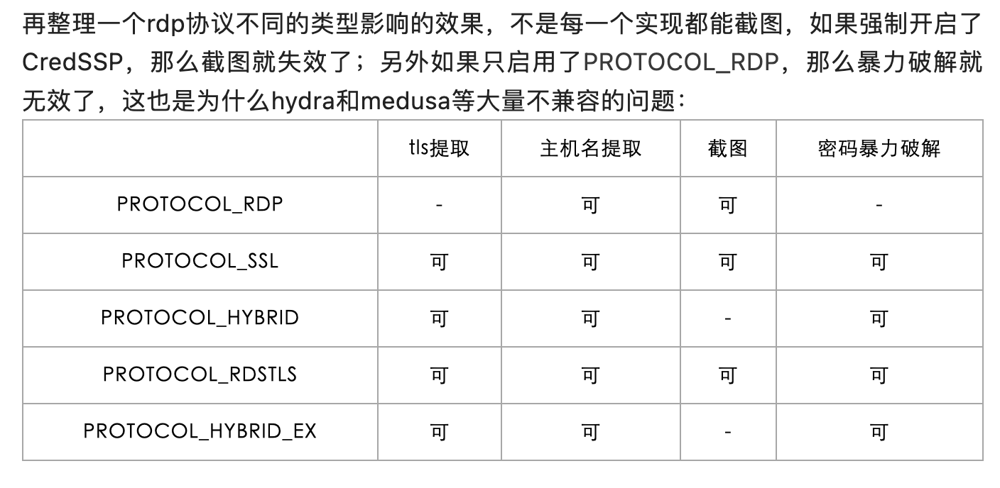
要实现RDP登录交互，这个涉及更后面的交互了，所以找了个go rdp的库 https://github.com/tomatome/grdp （这个库有点小bug，而且只能编译windows版本，不过我已经一通魔改，修了一些bug，并且支持全平台编译）
它里面提供了一个接口，可以获得位图数据
g.pdu.On("update", func(rectangles []pdu.BitmapData) {}
bitmap的数据结构可以看文档：https://learn.microsoft.com/en-us/openspecs/windows_protocols/ms-rdpbcgr/f4ed1422-2eed-4474-bafb-42ab35ad3707
获得截图要做的事情也很多很杂
- 获得的位图只是一小块图片，后需要将这些图片拼接起来
- 位图有的是压缩的，需要解压
- 涉及到将位图数据转换为图片等等
伪代码如下
ScreenImage := image.NewRGBA(image.Rect(0, 0, 1024, 768))
host := g.Host
g.pdu.On("update", func(rectangles []pdu.BitmapData) {
glog.Info("on update bitmap:", len(rectangles))
bs := make([]Bitmap, 0)
for _, v := range rectangles {
IsCompress := v.IsCompress()
data := v.BitmapDataStream
if IsCompress {
data = BitmapDecompress(&v)
IsCompress = false
}
b := Bitmap{int(v.DestLeft), int(v.DestTop), int(v.DestRight), int(v.DestBottom),
int(v.Width), int(v.Height), Bpp(v.BitsPerPixel), IsCompress, data}
bs = append(bs, b)
}
var (
pixel int
i int
r, g, b, a uint8
)
for _, bm := range bs {
i = 0
pixel = bm.BitsPerPixel
m := image.NewRGBA(image.Rect(0, 0, bm.Width, bm.Height))
for y := 0; y < bm.Height; y++ {
for x := 0; x < bm.Width; x++ {
r, g, b, a = ToRGBA(pixel, i, bm.Data)
c := color.RGBA{r, g, b, a}
i += pixel
m.Set(x, y, c)
}
}
draw.Draw(ScreenImage, ScreenImage.Bounds().Add(image.Pt(bm.DestLeft, bm.DestTop)), m, m.Bounds().Min, draw.Src)
}
// Encode to jpeg.
var imageBuf bytes.Buffer
err = jpeg.Encode(&imageBuf, ScreenImage, nil)
if err != nil {
log.Panic(err)
}
// Write to file.
fo, err := os.Create(fmt.Sprintf("img/%s-%d.jpg", host, index))
index += 1
if err != nil {
panic(err)
}
fw := bufio.NewWriter(fo)
fw.Write(imageBuf.Bytes())
})
这个代码会在前一帧的基础行保存图片，每一帧都会保存为一个完整的图片。
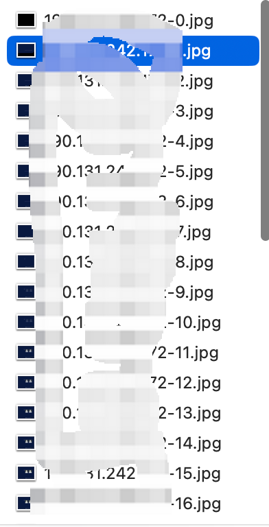
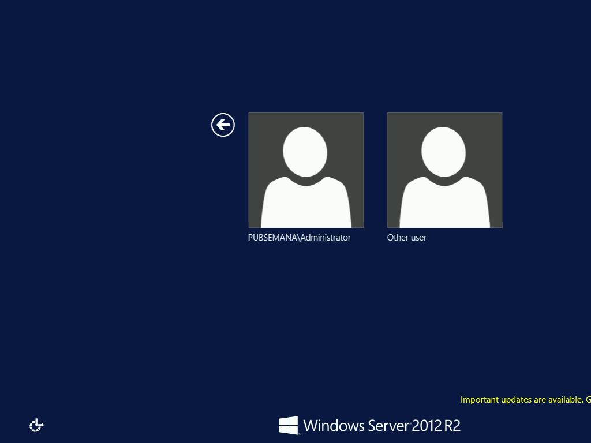
连起来就像是一个登录的gif
参考
完整源码放在知识星球了，微信公众号关注“Hacking就是好玩”，回复“知识星球”即可。
- https://github.com/praetorian-inc/fingerprintx
- https://github.com/nmap/nmap
- https://cloud.tencent.com/developer/article/1888905
- https://mp.weixin.qq.com/s?__biz=MjM5NDQ5NjM5NQ==\&mid=2651626127\&idx=1\&sn=0bdcd4969306c5f79707fa946da76b83
- 网络空间测绘技术之：协议识别（RDP篇）